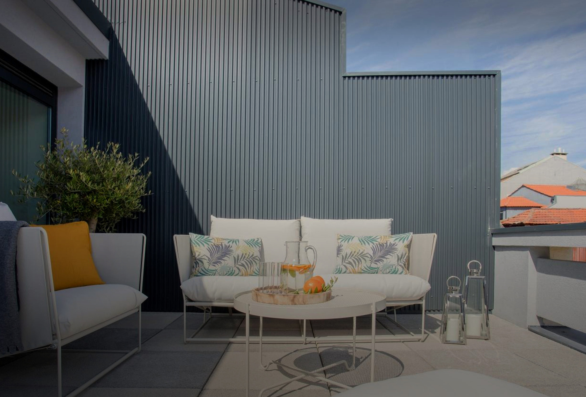
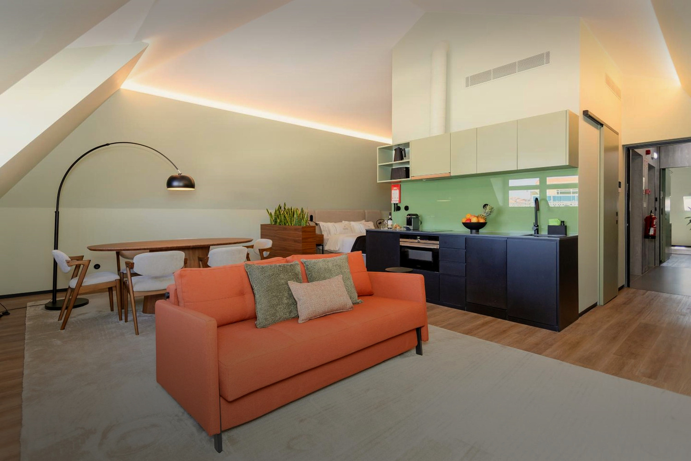
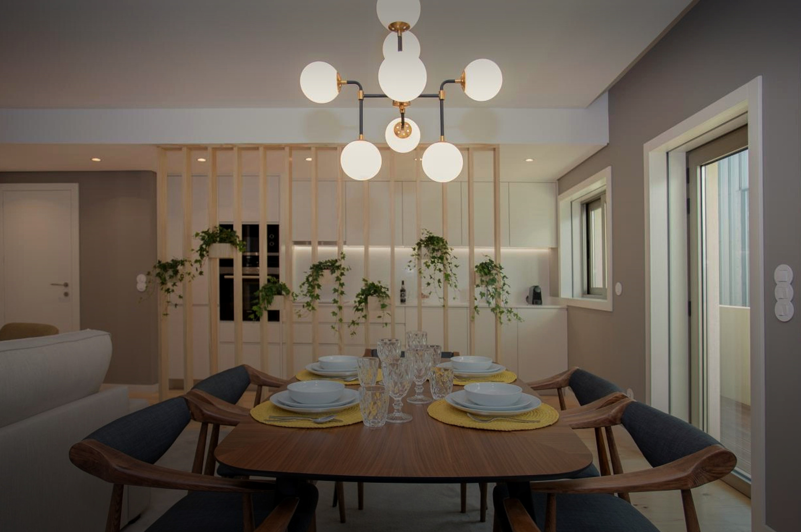
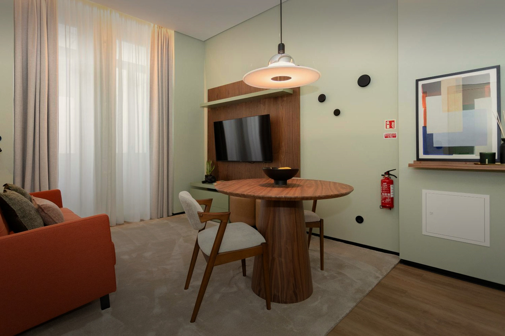
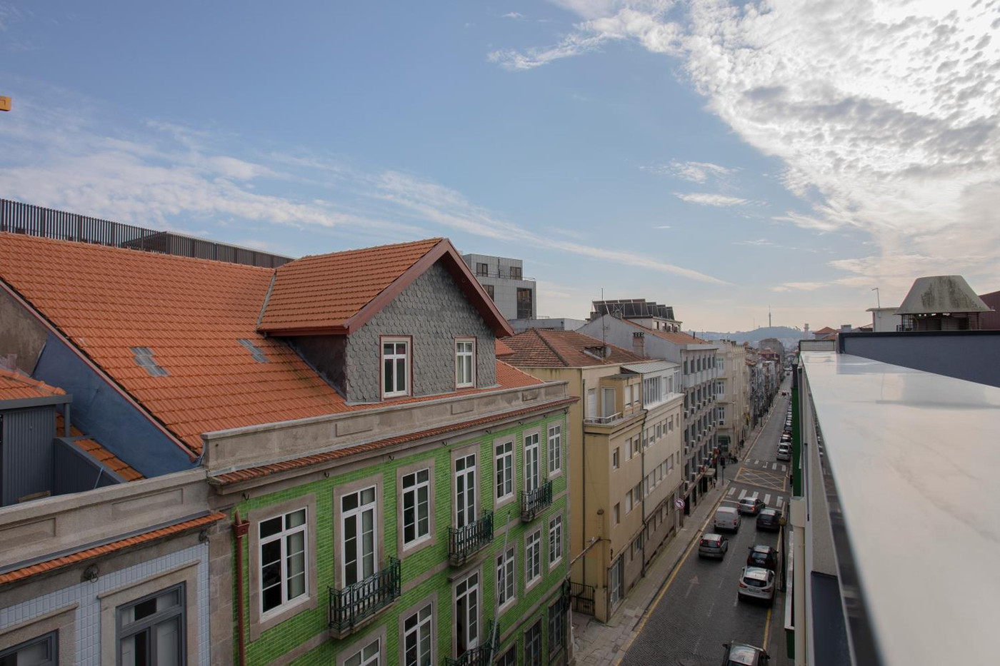
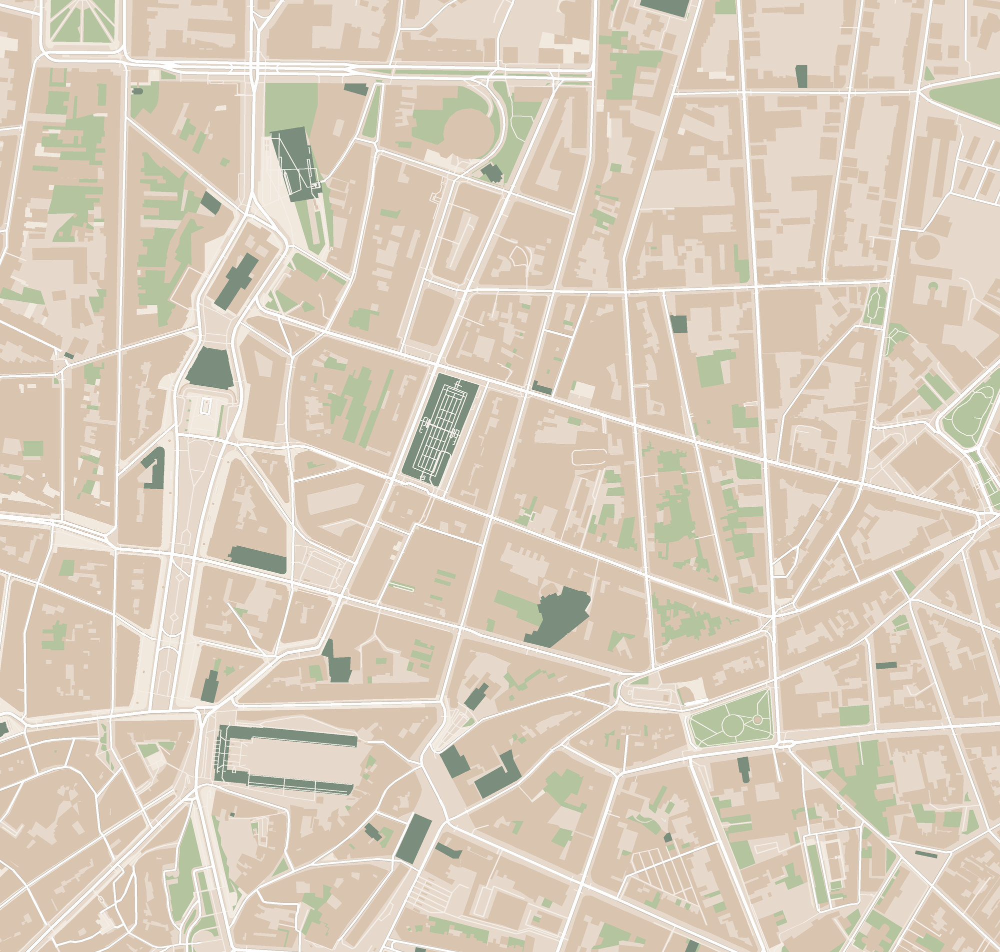
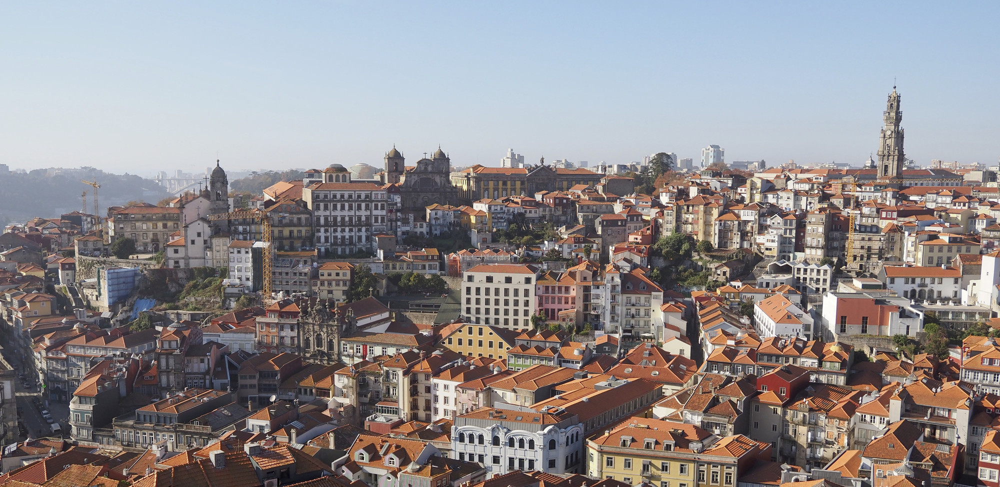

Alojamento local · Porto
Alegria Residence
Apartamentos inteiros em dois prédios renovados do centro do Porto, entre a Rua da Alegria e o Mercado do Bolhão.
Dois prédios, onze apartamentos.
Escolha o prédio para ver os apartamentos dele, ou veja-os todos.

ARua da Alegria, 215
Alegria
Prédio dos anos 60, renovado, com quatro andares e sem elevador.
3 apartamentos · com página: Alegria Penthouse, Alegria Standard
Ver os apartamentos B
BRua de Alexandre Braga, 26
Bolhão
Prédio dos anos 30 renovado em 2024, com elevador, em frente ao Mercado do Bolhão.
8 apartamentos · com página: Bolhão T1
Ver os apartamentosO bairro, à volta do Bolhão.
A Rua da Alegria e a Rua de Alexandre Braga ficam a poucos minutos a pé uma da outra, à volta do Mercado do Bolhão.

Rua de Santa CatarinaRua de Sá da BandeiraRua de Passos ManuelRua FormosaRua da AlegriaAvenida dos AliadosRua de Santo IldefonsoRua do BonjardimRua de Gonçalo CristóvãoRua de 31 de JaneiroRua do BolhãoPraça da BatalhaRua de Fernandes TomásMTrindadeMBolhãoMCampo 24 de AgostoMSão BentoMAliadosSão Bento1Mercado do Bolhão2Capela das Almas3Rua de Santa Catarina4Igreja de Santo Ildefonso5Teatro Sá da BandeiraARua da Alegria, 215BRua de Alexandre Braga, 26 200 m- MMetro
- Comboio
- Edifícios conhecidos
- A
Rua da Alegria, 215
Prédio dos anos 60, renovado, com quatro andares e sem elevador. 3 apartamentos.
- B
Rua de Alexandre Braga, 26
Prédio dos anos 30 renovado em 2024, com elevador, em frente ao Mercado do Bolhão. 8 apartamentos.
A e B: 4 min a pé um do outro
-
1
Mercado do Bolhão
O mercado de bancas de fruta sob uma cobertura de vidro fica mesmo ao lado, em frente à Rua de Alexandre Braga.
Em frente ao prédio B -
2
Capela das Almas
A fachada inteira é um painel de azulejos azuis e brancos na Rua de Santa Catarina.
2 min a pé do prédio B -
3
Rua de Santa Catarina
Rua pedonal de lojas e cafés onde fica o Café Majestic, a poucos minutos a pé.
5 min a pé do prédio A -
4
Igreja de Santo Ildefonso
Duas torres de granito e painéis de azulejo na fachada, na Praça da Batalha.
6 min a pé do prédio B -
5
Teatro Sá da Bandeira
Um teatro de fachada cor-de-rosa na Rua de Sá da Bandeira.
5 min a pé do prédio B
Tempos a pé calculados pelo percurso nas ruas (OpenStreetMap).
Nas palavras de quem ficou.
Há um grande capricho e carinho naquele apartamento.
Fabulous communication from the owner and they were very flexible.
Tout a été parfait. Décoration et équipement de très bonne qualité !
Location great - five minutes walk to markets and restaurants.
Antes de reservar.
Casas inteiras
Cada apartamento é só de quem o reserva, com cozinha e casa de banho próprias.
Check-in às 16:00
Entra-se a partir das 16:00 e sai-se até às 11:00.
Metro à porta
A estação do Bolhão fica a 20 m da Alexandre Braga e a 250 m da Rua da Alegria.
Escadas ou elevador
O prédio da Rua da Alegria não tem elevador; o da Alexandre Braga tem.
